Why Sentinel
Before you knock on a door, serve papers, meet a new client or step into a protection detail, you need to know three things: what the evidence supports, what is still uncertain, and what to verify before contact. Most of what you need is public. It is just scattered across dozens of sites, and when time is short, the checks that matter most are the easiest to skip.
Sentinel puts that work on the device you already carry. Start with one identifier. Sentinel runs automated checks against official wanted, sanctions and exclusion lists, lays out guided research across 150+ public sources, and can write a short AI-assisted Field Brief that separates what is supported from what is not.
Three rules run through the whole app:
- A name match is never treated as an identity. Every match stays “unverified” until a date of birth, address or ID number confirms it.
- A check that cannot run is marked unavailable, never shown as a clean result.
- Your case data stays on your device, encrypted, with no cloud sync. Sentinel’s server does not keep a history of your searches or a profile of you.
AI does the first pass. The professional makes the call.
About the developer
Sentinel was built by Hannu Huttunen, a security professional with more than 30 years of experience in investigations, executive protection and corporate security, including 11 years teaching corporate security and risk management. He built the tool he wanted in the field: fast, honest about uncertainty, and private by design.
Sentinel is independent and is not affiliated with or endorsed by any government agency.
How to use this guide
This guide walks through every screen and shows example workflows. The examples are just that: examples. They are not the only way to work. Every tool opens on its own from the home screen, in any order, and the tools combine freely to fit the job in front of you, whether that is a pre-contact check, process service, due diligence, an executive protection advance, a corporate investigation or fugitive recovery. Start wherever your case starts, and build the workflow that fits it, within the rules in Lawful use.
Contents
- Getting started
- The home screen
- Safety Before Contact
- Pre-Contact Assessment
- Screening tools
- Search tools
- Map View
- Image Forensics
- Cases and field work
- Reports
- Reading the results
- Example: investigating a harassment case
- Security and privacy
- Plans and limits
- Lawful use
- FAQ and support
Getting started
Install and free trial
Sentinel runs on iPhone and iPad and is available on the U.S. and Canadian App Stores.
- U.S.: https://apps.apple.com/us/app/sentinel-field-intelligence/id6761101801
- Canada: https://apps.apple.com/ca/app/sentinel-field-intelligence/id6761101801
The first time you unlock Sentinel, a 7-day free trial starts automatically. There is no sign-up and no payment card, and the trial never turns into a paid plan on its own. While the trial is active, the home screen shows Free trial · N days left with a View Plans button. Deleting and reinstalling the app does not restart the trial.
The trial includes 5 Pre-Contact searches per day, 5 Field Briefs, 1 other AI analysis and 1 Web Brief for the whole trial. Full Analysis requires Essential or Pro. See Plans and limits.
Unlocking the app
Sentinel opens on a lock screen and uses the protection your device already has:
- Face ID or Touch ID if it is set up, with
Use Passcodeas a fallback. - Your device passcode if Face ID and Touch ID are not set up.
- No device passcode at all: Sentinel shows
No Device Passcodeand asks you to set one. You can continue withContinue without protection, but anyone holding your unlocked phone could then open your cases. Set a passcode in iOS Settings.
Sentinel locks again every time it goes to the background, after the auto-lock timeout (15 minutes by default), and immediately when you shake the phone. After 5 failed attempts it waits 30 seconds, and the wait doubles with each further 5 failed attempts.
AI consent
The first time you start an AI feature (for example Generate Field Brief), Sentinel asks for permission with an alert titled AI analysis. It explains that the information you submit for that analysis is sent through Sentinel’s server to Anthropic, which provides the Claude AI models. You can choose Allow, Not now or read the Privacy Policy.
Not now: nothing is sent, and you can keep working without AI.Allow: Sentinel remembers your choice. You can withdraw it at any time in Security › Privacy › Withdraw AI data sharing.
AI is powered by Claude models from Anthropic.
Your first search
- On the home screen, tap New Pre-Contact Assessment.
- Type a name, phone number, email, IP address or domain.
- Tap Search.
A search uses one of your daily searches. It does not use AI. AI runs only when you tap an AI button, such as Generate Field Brief.
The home screen
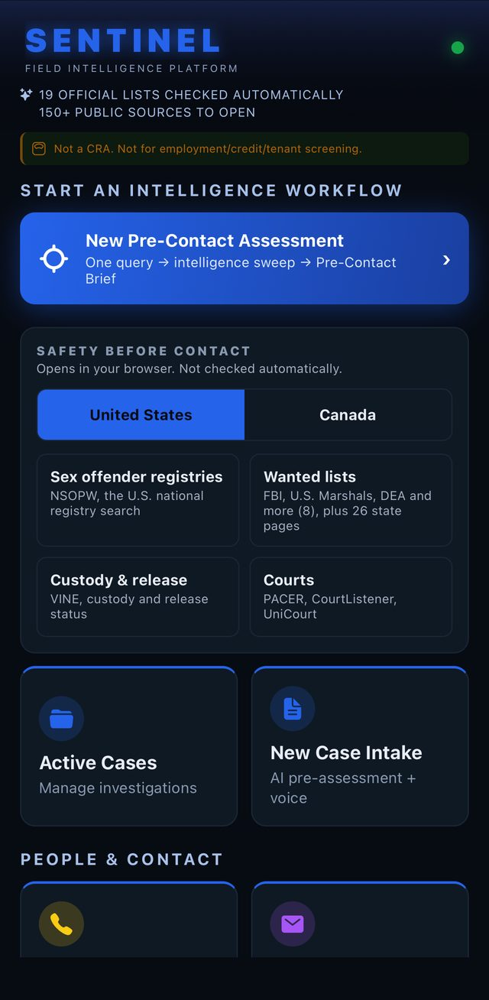
From the top:
- SENTINEL and two lines:
19 official lists checked automaticallyand150+ public sources to open. - A reminder:
Not a CRA. Not for employment/credit/tenant screening. - If a case is active, a banner shows that searches are being logged to it.
- New Pre-Contact Assessment: the main workflow. One query, an intelligence sweep, and a Pre-Contact Brief.
- SAFETY BEFORE CONTACT: official safety resources for the United States and Canada. See the next section.
- Active Cases and New Case Intake.
- Recently Searched: your last three searches. Tapping one fills it in again; it does not search or use AI by itself.
Below these, the tools are grouped by subject:
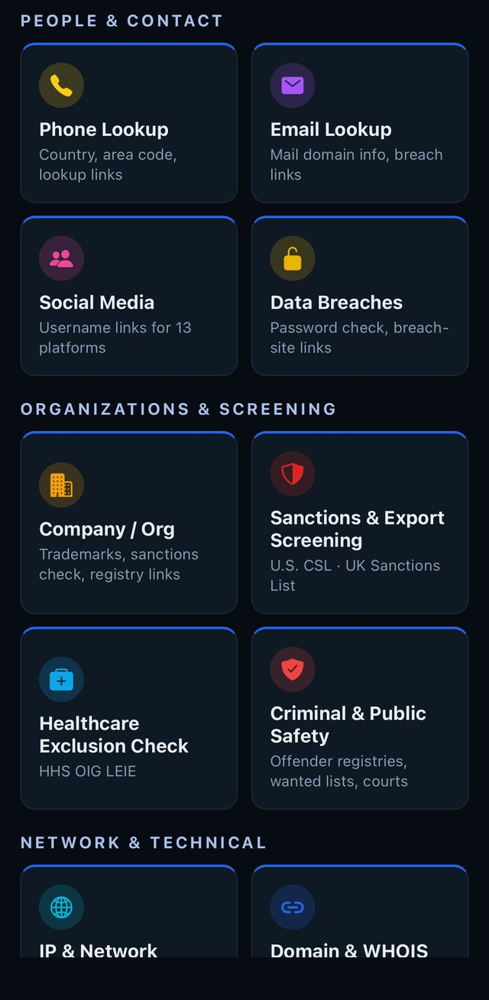
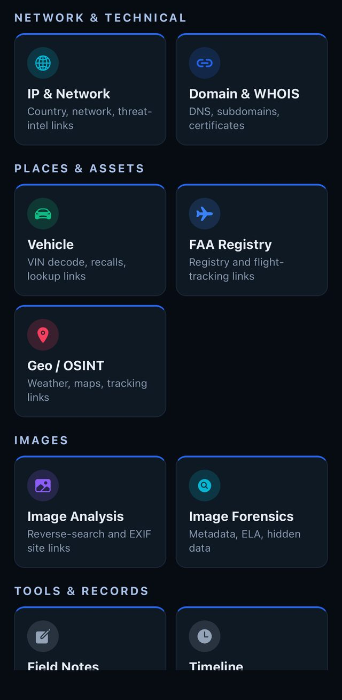
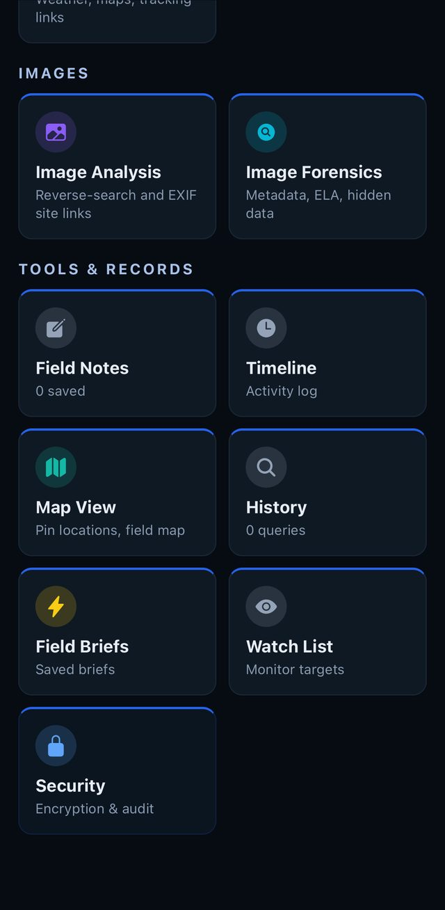
| Group | Tools |
|---|---|
| PEOPLE & CONTACT | Phone Lookup, Email Lookup, Social Media, Data Breaches |
| ORGANIZATIONS & SCREENING | Company / Org, Sanctions & Export Screening, Healthcare Exclusion Check, Criminal & Public Safety |
| NETWORK & TECHNICAL | IP & Network, Domain & WHOIS |
| PLACES & ASSETS | Vehicle, FAA Registry, Geo / OSINT |
| IMAGES | Image Analysis, Image Forensics |
| TOOLS & RECORDS | Field Notes, Timeline, Map View, History, Field Briefs, Watch List, Security |
Safety Before Contact
Know the risk before you knock. Safety Before Contact puts the public safety resources that matter most before a first contact one tap away: sex offender registries, wanted lists, custody and release status, and court records.
It sits right under New Pre-Contact Assessment on the home screen. The line under the title says it plainly: Opens in your browser. Not checked automatically. Sentinel opens each official site in your browser; it does not search these sites for you.
Choose the country
Use the switch to choose United States or Canada. Sentinel remembers your choice and uses it everywhere the safety resources appear: on the home screen, in a person search, and in Criminal & Public Safety.
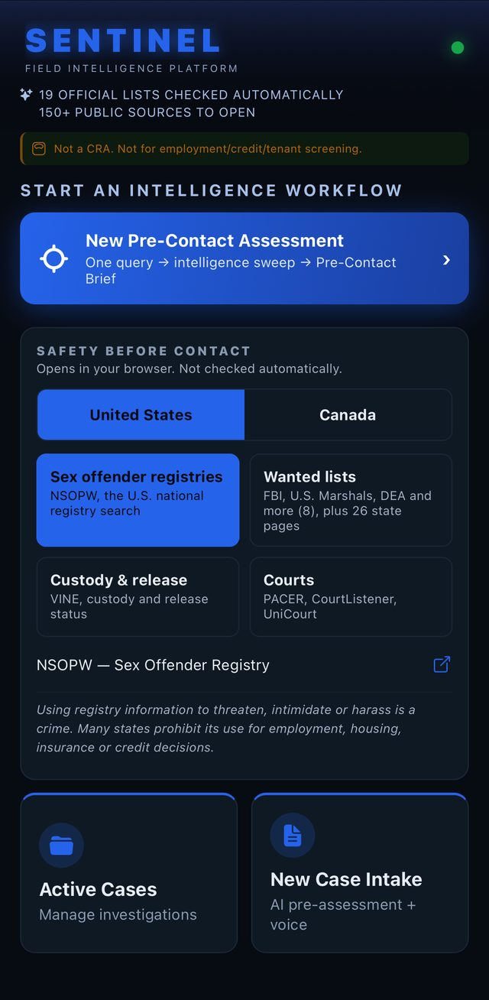
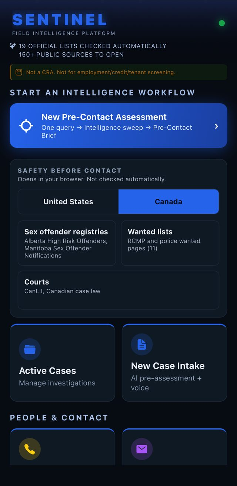
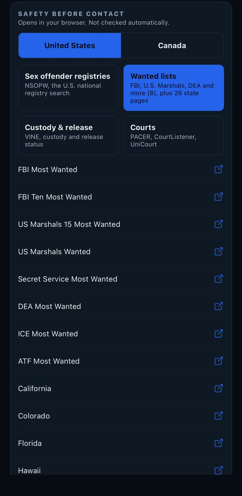
Tap a tile to open its list. Tap it again to close it.
United States
| Tile | What it opens |
|---|---|
| Sex offender registries | NSOPW, the U.S. national sex offender registry search |
| Wanted lists | 8 federal pages (FBI Most Wanted, FBI Ten Most Wanted, U.S. Marshals 15 Most Wanted, U.S. Marshals Wanted, Secret Service Most Wanted, DEA Most Wanted, ICE Most Wanted, ATF Most Wanted) and 26 state wanted pages |
| Custody & release | VINE, custody and release status |
| Courts | PACER (federal courts), CourtListener, UniCourt |
Canada
| Tile | What it opens |
|---|---|
| Sex offender registries | Alberta High Risk Offenders, Manitoba Sex Offender Notifications |
| Wanted lists | 11 pages: RCMP Most Wanted, BOLO Program, Toronto Police, OPP (Ontario), Sûreté du Québec, SPVM (Montréal), Winnipeg Police, and RCMP pages for British Columbia, Alberta, Saskatchewan and Manitoba |
| Courts | CanLII (Canadian case law) |
Canada has no public national sex offender registry. Sentinel links the public notices from Alberta and Manitoba. There is no Custody & release tile for Canada.
Use rules are shown with the link
Some sources carry a notice right under the link. Read it before you use the information:
- NSOPW: Using registry information to threaten, intimidate or harass is a crime. Many states prohibit its use for employment, housing, insurance or credit decisions.
- Alberta High Risk Offenders: A province-wide list of offenders police designated as a significant public safety risk. Misuse to harass or harm is a criminal offence.
- Manitoba Sex Offender Notifications: For Manitoba residents only. The site asks you to confirm residency.
How to use it. Registry and custody information is safety information for the professional: who you might meet at an address, whether to go alone, how to approach. It is not for screening people for jobs, housing, insurance or credit, and it is never a reason to harass anyone.
Pre-Contact Assessment
Pre-Contact Assessment is Sentinel’s main workflow: one identifier in, automated checks, guided checks and, if you want it, an AI-assisted Field Brief.
Enter the identifier
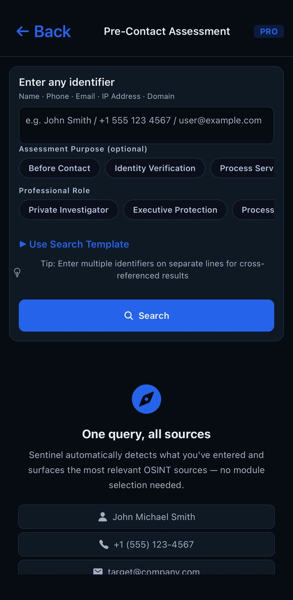
- Tap New Pre-Contact Assessment.
- In Enter any identifier, type a name, phone number, email, IP address or domain.
- Optional: choose an Assessment Purpose (
Before Contact,Identity Verification,Process Service,Due Diligence,Executive Protection,Company Assessment,Other). It is passed to the AI as context. - Choose your Professional Role (
Private Investigator,Executive Protection,Process Server,Bail/Fugitive Recovery,Corporate Security,Due Diligence,Corporate Investigation,Other). Sentinel remembers it, passes it to the AI, and moves the most relevant result groups for your role to the top. - Tap Search.
Tips
- For a person, enter a first and last name. A single word, such as a surname alone, is treated as a company.
- You can enter several identifiers on separate lines (for example a name and a phone number). Each line is searched and the results are cross-referenced.
Use Search Templatefills example lines (Skip Trace, Due Diligence, Background Check). Replace every example line with real details before you search.- Pre-Contact recognizes IPv4 addresses. For other IP formats, use the IP & Network tool.
How Sentinel reads your input
| You enter | Sentinel treats it as |
|---|---|
| name@domain.com | Email Address |
| a number such as +1 555 123 4567 | Phone Number |
| four numbers separated by dots (IPv4) | IP Address |
| example.com | Domain / Website |
| a name containing Inc, LLC, Ltd, Corp, Group, Holdings, “&” or “,” | Company / Organization |
| a first and last name | Person Name |
| a single word | Company / Organization |
| anything else | General Query (search-engine links) |
The detected type appears at the top of the results as DETECTED TARGET.
Automated checks
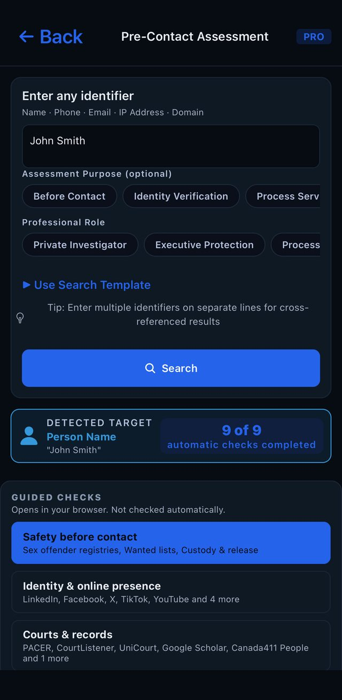
For a person name, Sentinel automatically checks 9 sources: FBI Most Wanted, Interpol Red Notices, OFAC SDN, UN Security Council, BIS Denied Persons, EU Consolidated, Canada Autonomous, the U.S. Consolidated Screening List and the UK Sanctions List.
For a company, it checks the U.S. Consolidated Screening List and the UK Sanctions List.
The counter next to DETECTED TARGET shows how many checks completed, for example 9 of 9 automatic checks completed. A check that could not run does not count as completed and is shown as unavailable.
Phone numbers, emails, IP addresses and domains have no automatic list checks; their results are guided links and technical data.
GUIDED CHECKS (person names)
After a person search, GUIDED CHECKS shows the next steps in four groups. The line under the title says: Opens in your browser. Not checked automatically.
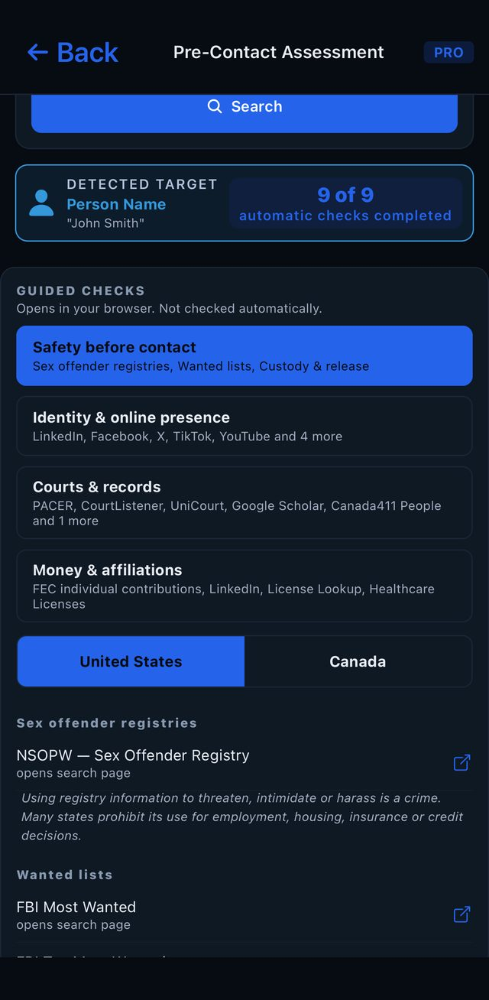
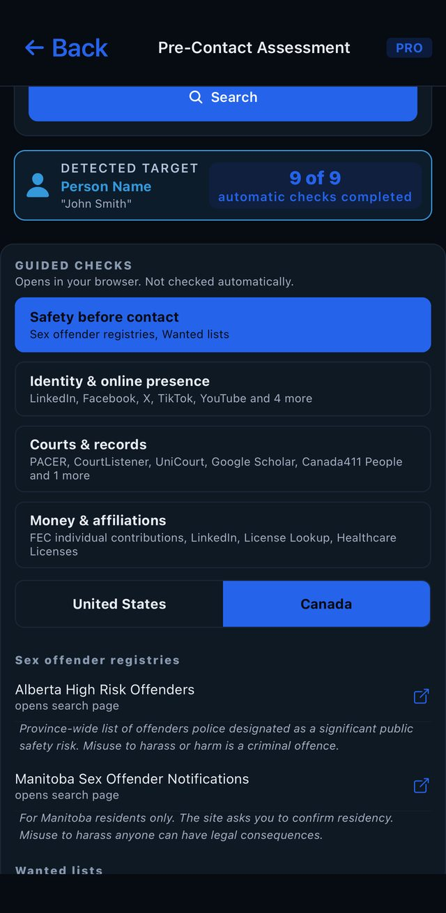
- Safety before contact is open by default and follows your country choice: sex offender registries, wanted lists and (U.S.) custody and release.
- Identity & online presence: name searches on LinkedIn, Facebook and X (these three require you to sign in), TikTok, YouTube and more.
- Courts & records: PACER, CourtListener, UniCourt, Google Scholar and Canadian directory links.
- Money & affiliations: FEC individual contributions, LinkedIn and professional license lookups.
Each link is tagged name filled in (the name is already in the search) or opens search page (you type the name on the site).
FEC note. FEC rules prohibit using contributor information for commercial purposes or to solicit contributions. The note is shown under the link.
More results
Below GUIDED CHECKS, SUPPORTING INTELLIGENCE SOURCES lists every result group for your input type. Groups marked QUERY EXECUTED ran automatically; groups marked AVAILABLE contain links. Tap a link to open it. Long-press a link to tag it as Evidence, Lead or Verified while you work.
Field Brief
Tap Generate Field Brief for a short AI-assisted summary. It uses 1 AI analysis (in the trial, 1 of your 5 trial Field Briefs). A Field Brief contains:
- AUTOMATED CHECKS: one row per check with
No match,MatchorUnavailable. - RISK FLAGS: from real matches only, with severity and source.
- IDENTITY CONFIDENCE: how sure the identification is, and why.
- TOP CHECKS BEFORE CONTACT: what to verify next, for your role.
- OPERATIONAL NOTE and NOT AUTOMATICALLY CHECKED.
Every Field Brief is saved in Field Briefs on the home screen. In the trial, tap See a sample brief to see a complete example on a fictional subject without using AI.
Full Analysis
Full Analysis goes deeper: identity confidence, confirmed and supported findings, possible associations, risk indicators, contradictions, information gaps, recommended verification and operational considerations. It uses 2 AI analyses and requires Essential or Pro.
- Switch views with
10s(a ten-second brief),Ops(operational view, the default) andFull.≡ Sectionsjumps to any section. - Mark each finding Confirm, Reject or Review. You can then regenerate the analysis using your reviewed findings (another Full Analysis, 2 AI analyses).
- To add a new identifier the analysis suggests, use IDENTITY RESOLUTION › ADD IDENTIFIER & RE-CHECK (it runs a new search).
- Set the ASSESSMENT STATUS (
Draft,Verification Req.,Ready for Review,Reviewed,Locked).Save to Casesaves the brief as a new case.
Web Brief
Generate Web Brief runs a live web search and writes a source-cited summary. It uses 1 Web Brief (trial 1, Essential 20 per month, Pro 50 per month).
What uses AI
| Action | Uses |
|---|---|
| Search | 1 daily search, no AI |
| Field Brief | 1 AI analysis (trial: 1 of 5 trial Field Briefs) |
| Full Analysis, and each regenerate | 2 AI analyses (Essential and Pro) |
| Relationship Map, Client-Ready Summary | 1 AI analysis each |
| Web Brief | 1 Web Brief |
| Confirm / Reject / Review, Save to Case, Export PDF | nothing |
Screening tools
Sanctions & Export Screening
Screens a person or company against the U.S. Consolidated Screening List, official U.S. government data that includes the SDN List, the Entity List and the Denied Persons List, and the UK Sanctions List. Screening is included in every plan, including the trial, and does not use AI.
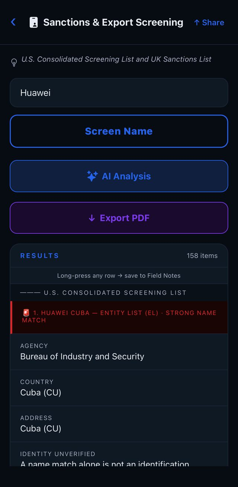
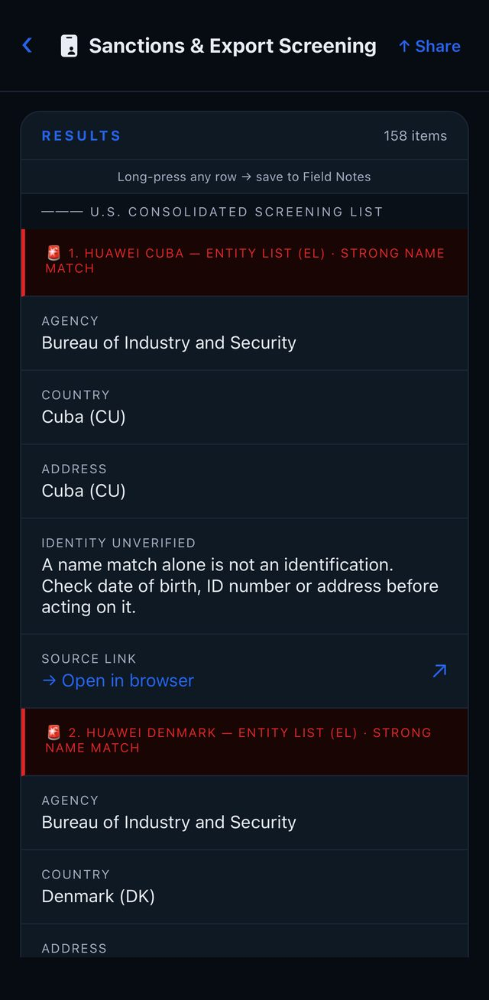
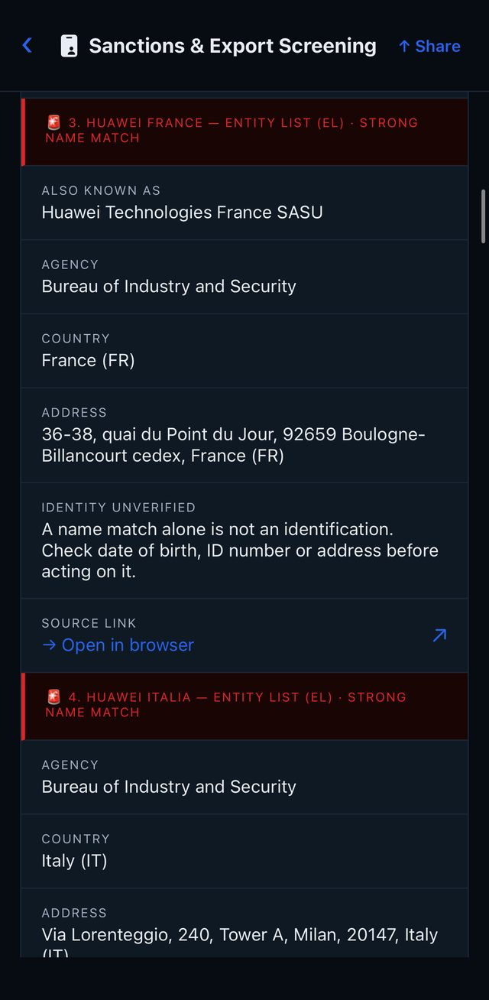
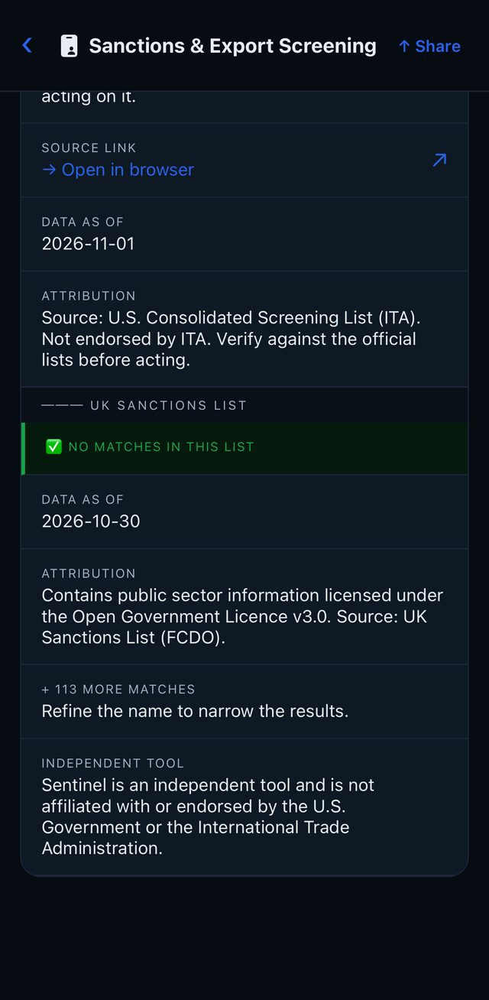
- Home › Sanctions & Export Screening.
- Enter a person or company name and tap Screen Name.
Each match shows the list, the agency, the match quality (Exact, Strong or Partial name match) and, when the data has them, aliases, country, address, date of birth and IDs. Every match carries Identity unverified: a name match alone is not an identification. Each list shows its Data as of date and the source’s attribution. When there are more matches than shown, + N more matches asks you to refine the name. Long-press any row to save it to Field Notes.
For example, a screening of “Huawei” returns entities listed on the U.S. Entity List.
Healthcare Exclusion Check
Checks a person or organization against the HHS OIG List of Excluded Individuals/Entities (LEIE): individuals and businesses excluded from Medicare, Medicaid and other federal health care programs. Built for provider fraud investigations, insurance special investigation units and business due diligence.
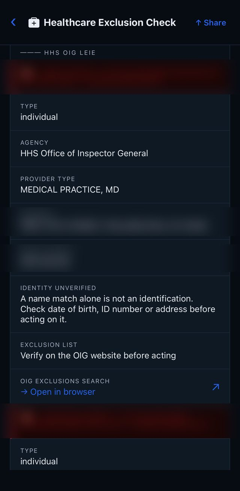
- Home › Healthcare Exclusion Check.
- Enter a name and tap Check Name.
Each result shows the data date, the source and a link to the official OIG exclusions search. Always verify on the OIG website before acting. The Healthcare Exclusion Check is a separate tool; it is not part of the Pre-Contact search.
Both screening tools end with: Sentinel is an independent tool and is not affiliated with or endorsed by the U.S. Government. If a list cannot be reached, you see Screening unavailable, never a clean result.
Search tools
Every tool works the same way: enter a value, tap the button, read the results. Rows marked ↗ open in your browser, rows marked ⎘ copy a value. After a search you can use AI Analysis (1 AI analysis), Generate Web Brief on supported tools, Add to Active Case when a case is active, and ↓ Export PDF (Pro and trial). Long-press any result row to save it to Field Notes.
| Tool | Enter | Checked automatically | Guided links |
|---|---|---|---|
| Phone Lookup | a number with country code | country and (for +1) area code, on your device | Truecaller, Should I Answer, WhoCallsMe, Facebook and Google search, Canada411 |
| Email Lookup | an email address | the mail domain: hosting, mail servers (MX), SPF (only the domain is sent) | HaveIBeenPwned, DeHashed, LeakCheck, Google, X, WHOIS, VirusTotal |
| Social Media | a username (no @) | nothing | profile links on 13 platforms and WhatsMyName. A profile page may not exist: check each one |
| Data Breaches | an email, username or domain, or a password | a password is checked against Pwned Passwords: only the first 5 characters of its hash leave the device, and it is never stored | HaveIBeenPwned, DeHashed, LeakCheck, IntelX, BreachDirectory |
| Company / Org | a company name or EIN | live USPTO trademark results; U.S. Consolidated Screening List and UK Sanctions List | SEC and financial, ProPublica Nonprofit Explorer, IRS Tax Exempt Organization Search, state and Canadian registries, ZoomInfo, OpenCorporates, SAM.gov and more |
| Criminal & Public Safety | a name, company or case number | nothing | U.S.: NSOPW, VINE, CourtListener, PACER, trafficking hotlines. Canada: Alberta and Manitoba notices, 11 police wanted pages, CanLII |
| IP & Network | an IP address | country, network and ASN (country level only) | AbuseIPDB, VirusTotal, Shodan, GreyNoise. Results from Shodan, AbuseIPDB and GreyNoise appear in the app with your own API keys (Security › API Keys) |
| Domain & WHOIS | a domain, without https:// | IP, hosting, DNS records, subdomains, SSL certificates | WHOIS, ICANN, VirusTotal, URLScan, Wayback Machine |
| Vehicle | a 17-character VIN | decoded vehicle details; NHTSA recalls; Transport Canada recalls for Canadian vehicles. A license plate is not looked up | NICB VINCheck, CPIC stolen-vehicle search (Canada), NHTSA complaints, Carfax |
| FAA Registry | an N-number, owner name or serial | nothing | FAA aircraft, airmen and drone registries, NTSB, flight tracking |
| Geo / OSINT | coordinates or an address | coordinates show the current weather | maps, satellite, flight and vessel tracking. Show on map opens the in-app map |
| Image Analysis | a direct image URL | nothing | reverse image search, EXIF and forensics sites. For a photo in your library, use Image Forensics |
Notes shown with some links
- DeHashed: Opens DeHashed with your own account. Results can include exposed credentials. Use only for lawful, authorized investigations.
- CPIC: Stolen vehicle check by VIN (Canada). A hit must be verified with local police.
- Vehicle recalls are searched by make, model and year, never by VIN. Not every unit in a recall is affected. Model names can differ between the U.S. and Canadian databases.
- IP location is country level only. Location below country level is often inaccurate.
Sentinel does not link to people-search or background-check report sites.
Map View
A street-level field map on Apple Maps for planning the approach. Home › TOOLS & RECORDS › Map View.
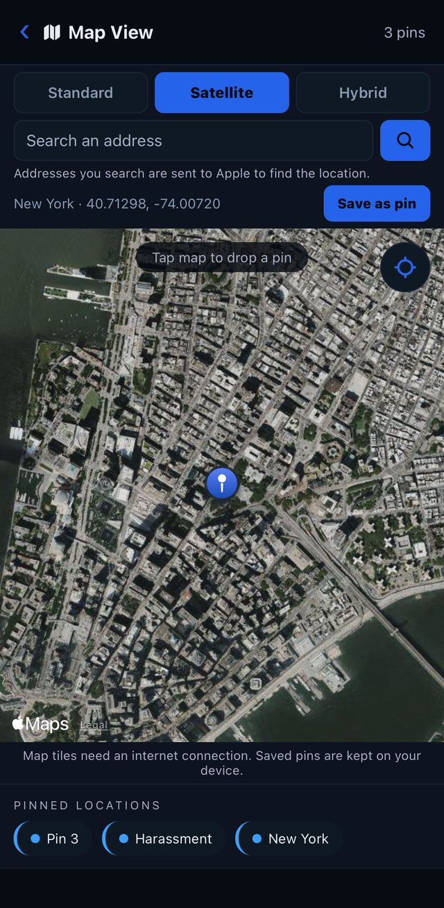
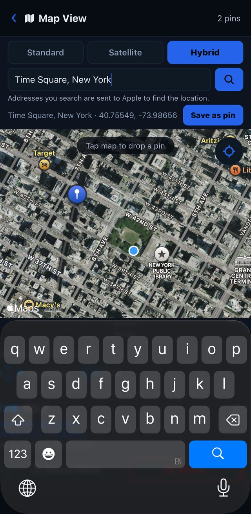
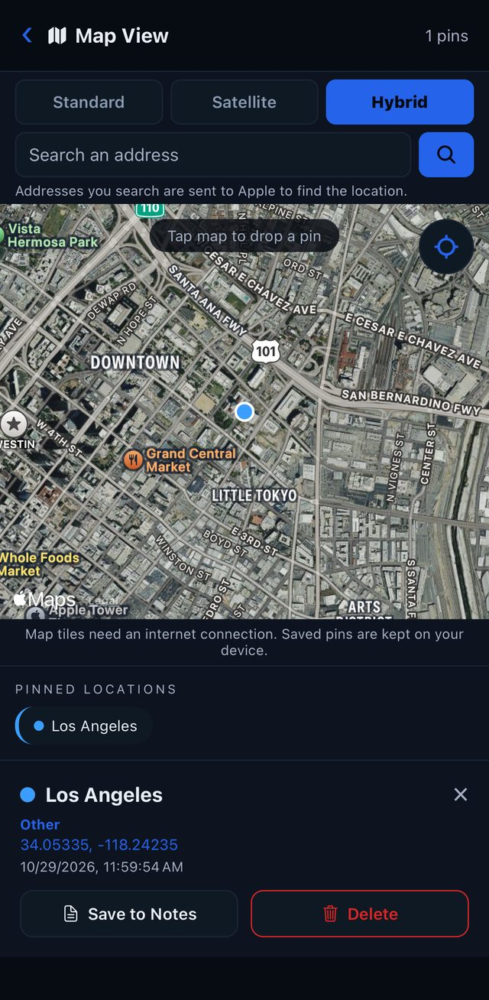
Views and address search
- Choose Standard, Satellite or Hybrid above the map. Sentinel remembers your choice.
- Type an address in Search an address and tap the search button. One match moves the map there; several show a list to choose from. The address you type is sent to Apple to find the location, only when you search, and Sentinel does not store it.
- Map tiles need an internet connection. Saved pins stay on your device.
Your location
Tap the locate button (top right of the map) to show where you are. Sentinel asks for location permission only when you tap it. If you have allowed it before, the map opens on your position. Sentinel never stores or sends your location.
Pins
- Tap the map (or
Save as pinafter an address search). The Drop Pin form opens. - Enter a title and note (optional), choose a TYPE (
Target,Staging,Exit,Other) and a CASE, and pick a color. - Tap Drop Pin.
Tap a pin under PINNED LOCATIONS to see its details. From there you can Save to Notes, Edit (title, note, type, case, color) or Delete it.
Pins in a case
The easiest way to plan an approach for a case:
- Open the case (Home › Active Cases › your case).
- Under Map Pins, tap Add pin. The map opens with the case already selected, and a banner reads
Tap map to drop a pin forfollowed by the case name. - Drop your pins: the target address, your staging point, your way out.
- Tap ‹ to return to the case. The pins are listed under Map Pins and in the case PDF report (Pro and trial).
Tapping a pin in the case’s Map Pins list opens it on the map.
Show on map
Coordinates open directly on the map from:
- Image Forensics, when a photo contains GPS data.
- Geo / OSINT, after a search (coordinates, or an address that Apple looks up).
- A case’s Map Pins list.
Image Forensics
Analyzes a photo from your library. Home › IMAGES › Image Forensics.
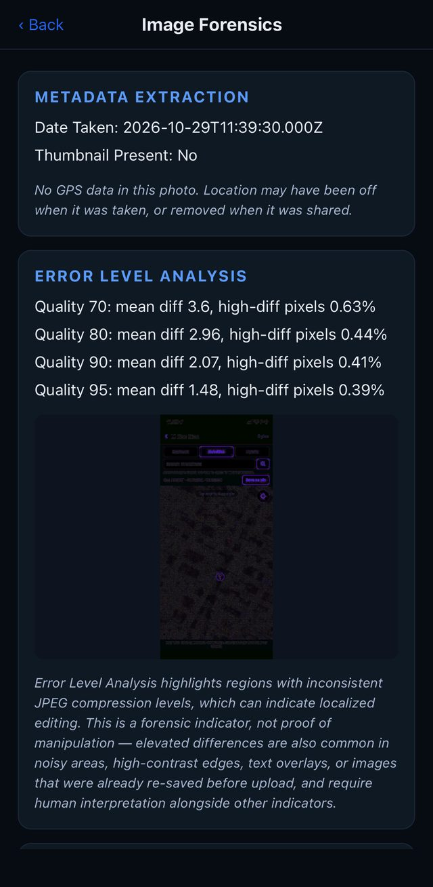
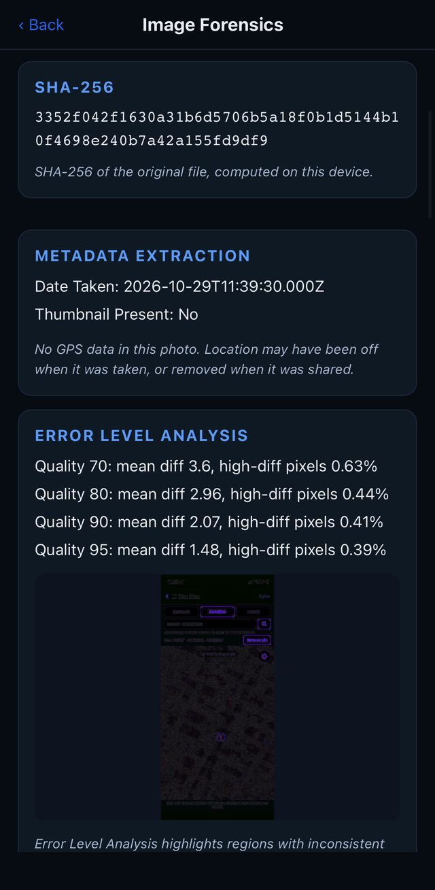
- Tap Select Photo and choose a photo. Sentinel only gets the photos you choose.
- The SHA-256 card appears right away: a 64-character fingerprint of the original file, computed on your device and not sent anywhere.
- Tap Run Forensic Analysis.
What the analysis shows
- METADATA EXTRACTION: camera make and model, software, date taken, and GPS with a
Show on mapbutton when the photo contains a location. - ERROR LEVEL ANALYSIS: compares compression levels across the image, with a heat map. Inconsistent areas can indicate local editing. It is an indicator, not proof.
- JPEG / COMPRESSION ANALYSIS: estimated original quality, chroma subsampling, progressive encoding.
- HIDDEN-DATA SCREENING: trailing data and comment or text segments.
- PERCEPTUAL HASH: a visual fingerprint for finding near-duplicate images.
- AI FORENSIC INTERPRETATION: supported findings, possible anomalies, conflicting indicators, limitations and recommended verification.
iPhone HEIC photos are supported. Sentinel’s server converts a copy to JPEG for the analysis, and a note says so: compression and ELA results describe the converted copy, while metadata and the SHA-256 hash come from the original file.
Good to know
- AI use: every run ends with the AI interpretation and uses 1 AI analysis. In the trial, that is the trial’s single AI analysis. If you answer
Not nowto the AI question, or your AI analyses are used up, all other results still appear and the AI card tells you why it is missing. - The photo is sent to Sentinel’s server for analysis, processed in memory and not stored. The AI receives the results as text, not the photo.
- No GPS? Many apps and services remove location data when a photo is shared, and some photos are taken with location turned off. Sentinel says so: No GPS data in this photo.
- Where a photo was taken is not who sent it. GPS shows where the camera was, not who shared the image or where they are now.
- Keep the original file. Ask for the original file (for example as an email attachment), not a screenshot. A screenshot does not carry the original’s metadata.
Using SHA-256 for your case file
A SHA-256 hash is a fingerprint of a file. The same file always gives the same hash; change one pixel or one byte of metadata and the hash changes completely. The hash does not reveal the image, and the image cannot be rebuilt from it.
Write the hash in your case notes or report. If anyone later questions whether the image was altered, calculate the hash again: a match shows the file is the one you documented.
Cases and field work
Active Cases
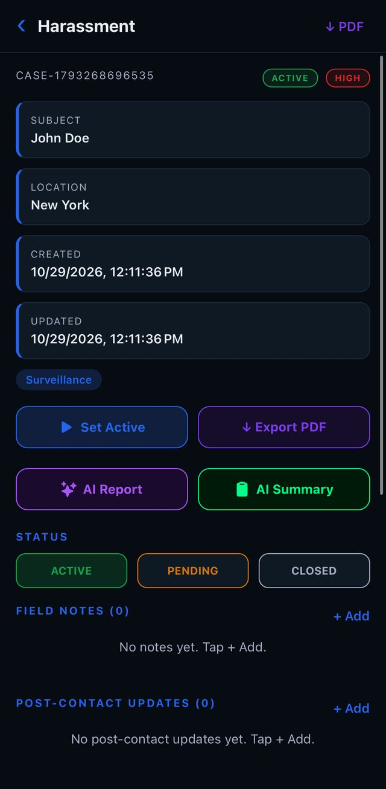
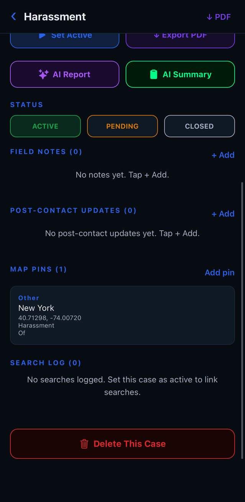
Home › Active Cases (screen Case Management).
- Tap + New, enter a Case Title (required), subject, location, objective, priority and tags, and tap Create Case.
- Open a case to see its details and sections:
- Set Active: while a case is active, every search is logged to it.
- ↓ Export PDF (Pro and trial): the case report.
- AI Report and AI Summary (1 AI analysis each; AI Summary needs at least one note).
- Status:
ACTIVE,PENDING,CLOSED. - Field Notes, Post-Contact Updates (an AI summary of what happened after contact, 1 AI analysis), Map Pins and Search Log.
- Delete This Case removes the case and its data permanently.
Pro and trial users can also search their cases in plain language (1 AI analysis per search).
New Case Intake
Home › New Case Intake. Enter or dictate subject information, choose a case type, add background and special concerns, and tap Run AI Pre-Assessment. You get a risk score from 0 to 100, case complexity, pricing guidance, key findings, red flags and recommended actions. Nothing is saved to a case automatically.
Dictation
Tap the microphone in Case Intake or Field Notes and speak; tap again to stop. Dictation uses iOS speech recognition in U.S. English, which can need an internet connection. The first time, iOS asks for Microphone and Speech Recognition permission.
Field Notes, Timeline, History, Field Briefs
- Field Notes: tap + Add, pick a tag (General, Person, Vehicle, Location, Financial, Digital, Legal, Evidence, Lead, Follow-up) and write or dictate. If a case is active, the note is also saved to the case.
AI Note Analysissummarizes your notes (1 AI analysis). - Timeline: your activity log, grouped by date.
Generate AI Investigation Summarywrites key findings, risk indicators and open questions (1 AI analysis). - History: every search (up to 200).
Clearempties it. Password checks are never recorded. - Field Briefs: every Field Brief you have generated. Opening one costs nothing.
Watch List
Home › Watch List. Add a person, domain, IP or phone target. Sentinel checks active targets about once a day in the background (iOS decides the exact time) and sends a notification when something changes:
- domain: its IP addresses changed.
- ip: its network owner or city changed.
- person / phone: the number of alert markers in a repeated Pre-Contact search changed.
The first check records a baseline. A check that could not run changes nothing. Tap Check All Now for an immediate check.
Reports
All PDFs are created on your device and shared through the iOS share sheet. Nothing is uploaded.
| Where | Report | Plans |
|---|---|---|
| Pre-Contact, before a Full Analysis | ↓ Export PDF: a report of the search results and links |
every plan, including the trial |
| Pre-Contact, after a Full Analysis | Investigator Report, Executive Summary, Due Diligence Report or Client-Ready Report: case overview, AI executive summary, key findings, sources, methodology and limitations, investigator certification |
Essential and Pro (Full Analysis is not available in the trial) |
| Any tool screen | ↓ Export PDF: the tool’s results with sources and retrieval times |
Pro and trial |
| A case | ↓ Export PDF: case overview, research log, field notes and the MAP PINS table |
Pro and trial |
Branding: in Security › PDF Report Branding, enter your firm name, investigator name and license number. They are added to the four Pre-Contact reports exported after a Full Analysis.
Reading the results
| Mark | Meaning |
|---|---|
| ✅ | No match in the source checked |
| 🚨 | A name match: verify before acting |
| ⚠️ | The check was unavailable, or a caution |
| ℹ️ | A note |
- A name match is not an identity. Every list match is labeled Identity unverified. Check date of birth, ID number or address before acting on it.
- Unavailable is not clean. If a source cannot be reached, Sentinel says so. It never shows a failed check as “no match”.
- Data dates. Lists show when their data was published (
Data as of YYYY-MM-DD). + N more matches. More matches exist than are shown. Refine the name.- Identity confidence. The Field Brief and Full Analysis state how confident the identification is, and why.
- Guided links are not checks. A link tagged
opens search pagemeans you still need to search on that site.
Example: investigating a harassment case
This is one example of how the tools work together. The same pattern of leads, confirmation, risk and record carries over to many other kinds of cases.
Harassment cases follow a clear order: identify who is behind the contact, confirm it, assess the risk, and document everything. Sentinel supports each step.
Sentinel does not tell you who owns a phone number, an email account or an IP address. Subscriber and account details usually require legal process; Sentinel helps you build the record that supports it.
1. Work the leads your client received
- Phone Lookup: country, area code, and spam-report and caller-ID sites. Check whether others have reported the same number.
- Email Lookup: the mail domain details and breach-check sites.
- Social Media: check a username across platforms. People who harass often reuse the same handle.
- Image Forensics: device, dates, signs of editing and GPS if it is still in the file. Record the SHA-256 hash.
- Web Brief: live web research on a username or number, with sources (1 Web Brief).
2. Confirm before you conclude
Run a Pre-Contact Assessment on the suspected person. Treat every match as unverified until a date of birth, address or other identifier confirms it. A wrong accusation in a harassment case causes real harm.
3. Assess the risk before any contact
- Safety Before Contact: before serving papers or approaching the suspected person, open the sex offender registries, wanted lists and court records for your country.
- Custody & release (VINE, U.S.): shows whether a person is in custody. Victims can register with VINE for release notifications.
- Registry information is for safety. Using it to threaten, intimidate or harass anyone is a crime.
4. Build the record
- Field Notes and New Case Intake: log each incident as it happens, by voice if needed.
- Timeline: incidents in order. In harassment cases, repetition and sequence often matter most.
- Confirm / Reject / Review: mark each finding in a Full Analysis.
- Map View: pin the places where incidents happened and link the pins to the case.
- PDF report: hand the record to your client, their attorney or law enforcement. The case PDF is available in Pro and the trial; on Essential, export the Pre-Contact report.
Every result is a lead to verify, not a conclusion. The investigator makes the call.
Security and privacy
Your case file stays on your device.
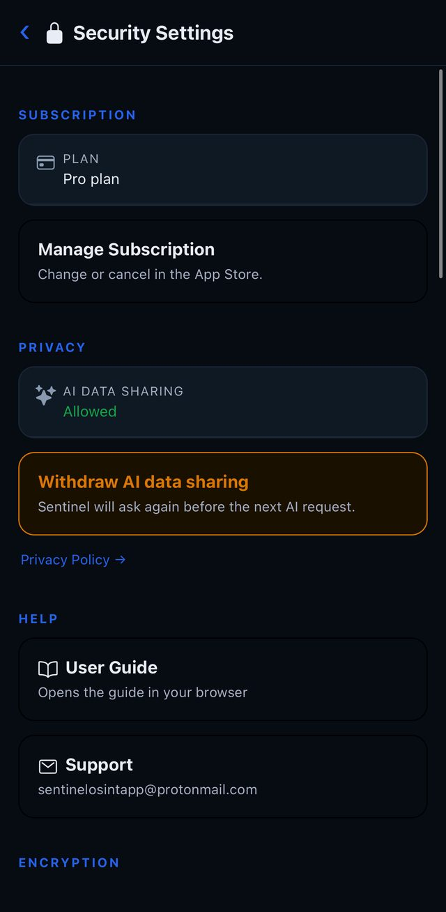
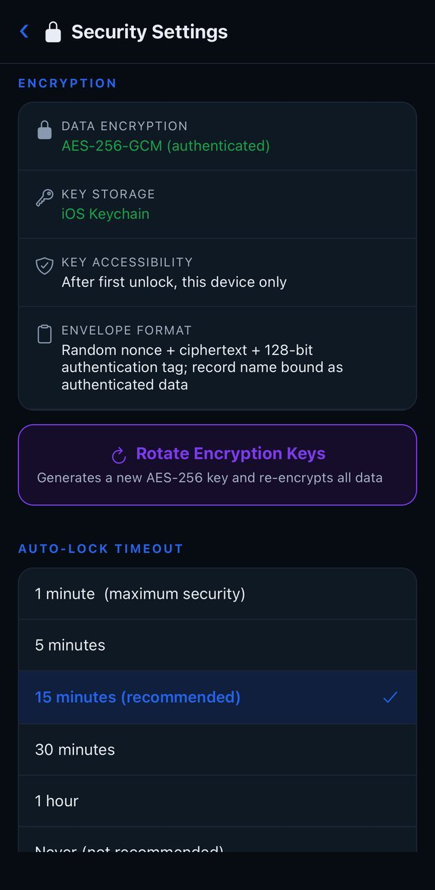
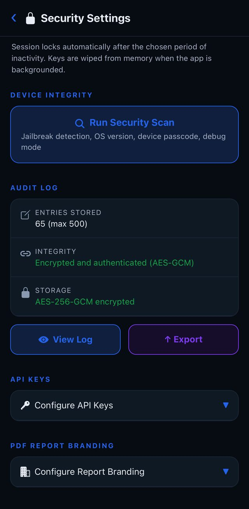
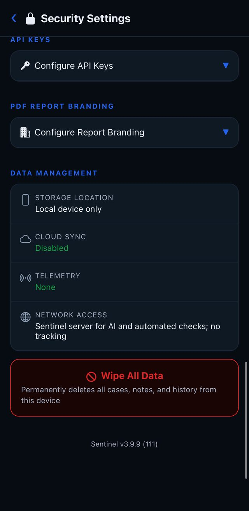
- Always under your control. Sentinel lives on the iPhone or iPad in your pocket, locked behind Face ID, Touch ID or your passcode. One shake locks it instantly.
- On your device, encrypted. Cases, notes, history, saved briefs, pins and settings are encrypted with AES-256-GCM, on top of iPhone’s own encryption. The keys are kept in the iOS Keychain, on this device only.
- Nothing in the cloud. There is no cloud sync and no telemetry. Sentinel’s server does not keep a history of your searches or a profile of you.
- Gone in seconds, for good. Wipe All Data deletes your cases, notes, history and settings and destroys the encryption keys. What is left cannot be read.
- Lost or stolen? Erase the device remotely with Apple’s Find My, and Sentinel’s data goes with it.
Security Settings
Home › TOOLS & RECORDS › Security:
- Subscription: your plan, and
Manage Subscriptionin the App Store. - Privacy: AI data sharing on or off, and the Privacy Policy.
- Help:
User GuideandSupport. - Encryption: AES-256-GCM, iOS Keychain, and Rotate Encryption Keys (a new key, all data re-encrypted).
- Auto-Lock Timeout: 1 minute to 1 hour, or Never. 15 minutes is recommended.
- Device Integrity: Run Security Scan checks for jailbreak indicators, a physical device, debug mode, a device passcode and the iOS version, and gives a score out of 100.
- Audit Log: an encrypted record of security events (up to 500 entries).
View LogandExport. - API Keys: your own keys for AbuseIPDB, GreyNoise and Shodan, stored on the device.
- PDF Report Branding: firm name, investigator name and license number for the Pre-Contact reports.
- Data Management: storage location, cloud sync, telemetry, network access, and Wipe All Data.
When features go online
Sentinel is not an offline app. Automated checks, AI features, Image Forensics, maps, dictation and lookups connect to Sentinel’s server or to the service behind them when you use them, and guided links open the source site in your browser.
What Sentinel does not do: its server does not keep a history of your searches or a profile of you, and there is no account that ties your searches to you. Your cases, notes and history stay encrypted on your device.
The details are in the Privacy Policy: https://sentinelosint.github.io/sentinel-privacy/
What Wipe All Data does
Wipe All Data asks twice, then deletes cases, notes, history, saved Field Briefs, the Watch List, settings (including AI consent, API keys, pins and branding) and the audit log, and destroys the encryption keys. It does not reset the free trial or your usage counters, and your subscription stays active. Photos in your library and PDFs you have already shared are outside Sentinel and are not affected.
Plans and limits
| Free trial (7 days) | Essential | Pro | |
|---|---|---|---|
| Price (U.S. / Canada) | free, no card | $24.99 / CA$34.99 per month | $59.99 / CA$79.99 per month |
| Pre-Contact searches | 5 per day | 10 per day | no daily limit |
| Field Briefs | 5 for the trial | 1 AI analysis each | 1 AI analysis each |
| AI analyses | 1 for the trial | 20 per month | 100 per month (50 in the first 14 days) |
| Full Analysis (counts as 2) | not available | yes | yes |
| Web Briefs | 1 for the trial | 20 per month | 50 per month |
| Cases | up to 999 | up to 3 | up to 999 |
| Watch List targets | up to 999 | up to 3 | up to 999 |
| PDF export from tools and cases | yes | no | yes |
| AI Client-Ready Summary, AI case search | yes | no | yes |
| Sources | 19 official lists checked automatically, 150+ public sources | same | same |
- Every plan has the same sources, methodology and security. Pro adds capacity and advanced reporting.
- Monthly counters reset at the start of each month (UTC).
- Subscriptions are monthly through Apple. You can subscribe during the trial (Home ›
View Plans, or Security › Subscription) and manage or cancel in your Apple account settings. Prices are set by the App Store and shown in the app in your currency.
Lawful use
Sentinel is for lawful professional research by investigators and security professionals.
- Sentinel is not a consumer reporting agency. Do not use it for employment, tenant, credit, insurance or other eligibility decisions, or for any purpose covered by the Fair Credit Reporting Act (FCRA).
- Sentinel is not a people-search or background-check service and does not sell personal records.
- Follow the law where you work, including the Driver’s Privacy Protection Act (DPPA) and state and provincial privacy laws. Sources you open in the browser have their own terms.
- Registry information (sex offender registries, offender notices) must never be used to threaten, intimidate or harass anyone. Many states restrict other uses.
- FEC contributor information may not be used for commercial purposes or to solicit contributions.
- You are responsible for verifying identity and for every decision you make. Sentinel’s results, including AI output, are leads to verify, not conclusions.
FAQ and support
Does a search use AI? No. A search uses one of your daily searches. AI runs only when you tap an AI button.
Why does my search for a surname show company results? A single word is treated as a company. Enter a first and last name.
Why don’t I see a GPS location for my photo? The photo has no GPS data. Location may have been off when it was taken, or it was removed when the photo was shared.
Why does a check say unavailable? The source could not be reached. Sentinel never shows a failed check as a clean result. Try again later.
Does Sentinel check the sex offender registries automatically? No. Safety Before Contact opens the official sites in your browser.
Can I use Sentinel without AI? Yes. Answer Not now to the AI question, or withdraw AI data sharing in Security › Privacy. Searches, automated checks, guided links, maps, cases and notes all work without AI.
Does Wipe All Data restart my trial? No. Trial and usage counters are kept so that wiping data cannot reset them.
What happens when my trial ends? Sentinel shows a plans screen. Your data is kept on the device and is available again when you subscribe.
How do I contact support? Security › Help › Support, or email sentinelosintapp@protonmail.com.
Links
- Privacy Policy: https://sentinelosint.github.io/sentinel-privacy/
- App Store (U.S.): https://apps.apple.com/us/app/sentinel-field-intelligence/id6761101801
- App Store (Canada): https://apps.apple.com/ca/app/sentinel-field-intelligence/id6761101801
- Demo videos: https://www.youtube.com/@SentinelFieldIntelligence/shorts
- Support: sentinelosintapp@protonmail.com
Sentinel is independent and is not affiliated with or endorsed by any government agency. AI is powered by Claude models from Anthropic. Apple, iPhone, iPad, Face ID, Touch ID and Find My are trademarks of Apple Inc.